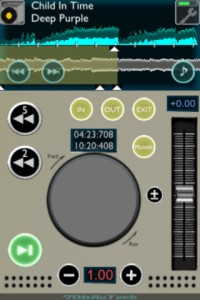

IK Multimedia – the leader in mobile music creation accessories for iOS – is proud to announce iRig™ KEYS, the first ultra-slim and highly portable universal MIDI controller keyboard for iPhone, iPod touch, iPad and Mac/PC.
iRig KEYS connects directly to the dock connector of the iOS device or the USB port on Mac/PC. It features 37 velocity-sensitive mini-keys – 3 full octave range plus one note, which takes up minimal space when used on a desktop, and can easily fit in a backpack or a carry-on bag.
iRig KEYS is Core MIDI and USB class compliant for a true plug-and-play experience both with iOS devices or Mac/PC, with no additional apps, software or drivers needed. For total mobility, iRig KEYS also is an ultra-low power consumption unit. When hooked up to an iPhone/iPod touch/iPad, it can be powered by the device and for longer playing sessions it can be powered by the available USB port. When connected to a Mac/PC, the USB port powers it.
iRig KEYS is the ultimate player and producers’ companion that can be used any time and anywhere inspiration strikes. Players simply hook it up to an iOS device or a computer and start playing. iRig KEYS can be used for live performance, songwriting and composition with the included apps and software or with a multitude of other MIDI compatible instruments and recorders on any iOS, MacOS or Windows system.
A small controller with great features
For maximum playing comfort and versatility, iRig KEYS includes regular modulation and pitch-bending wheels, plus an input for an optional standard sustain pedal that accommodates any playing style, all housed in a sleek ultra-compact durable package.
iRig KEYS features an “easy-to-use” programmable control panel with 5 backlit soft-touch buttons and one volume/data knob. Program and Octave up/down buttons are included plus a Set button that allows storage of up to 4 different customized set-ups for the two wheels and the data knob. Each set-up can be instantly recalled for specific instruments configurations. An Edit mode is also available to transpose the keyboard, send specific program change messages, change MIDI channel and reassign the data knob MIDI control changes in a flash.Plug and play out of the box
iRig KEYS comes complete with two free professional quality virtual instrument apps and software that can be immediately downloaded and played, for a true plug-and-play experience right out of the box.For iPhone, iPod touch and iPad, iRig KEYS comes with:
SampleTank for iPhone or iPad FREE, the virtual sound module including a complete selection of acoustic, electric and electronic instruments and patterns, unlocking 48 bonus instruments in addition of the 20 included with the free version (to be downloaded from the App Store)On Mac/PC iRig KEYS come with a downloadable version of:
SampleTank 2 L the Mac/PC sample workstation, available both as a stand-alone and as a plug-in for most popular DAW (including GarageBand, Logic, ProTools, Cubase, Live, Sonar and more) with 2 GB of samples in every instruments category (to be downloaded from the IK Multimedia online User Area)Price and availability
iRig KEYS will be shipping in Autumn 2012 for €74.99 (ex VAT) and will be available in musical instruments and electronic retailers around the world. Pre-orders are now available from the IK Online store and other selected online stores.For more information:
IK Multimedia announces iRig KEYS
Nord Beat
[app 542657071]Nord Beat is a 4-track CoreMIDI Step Sequencer for iPad.
Features:
– 8 Patterns
– 3 Velocity levels
– Velocity faders
– Adjustable pattern length (1-16)
– Copy/Paste patterns
– Flexible cueing system
– Shuffle
– Mute button for each track
– Tap Tempo
– Pad mode with velocity zones
– Load/Save song
– MIDI Setup (Channel/Note number)Nord Beat requires a CoreMIDI compatible MIDI interface.
SpaceWiz
[appext 541828795]SpaceWiz allows you to interact with and control your environment at the highest level of complexity. With the manipulation of your own fingers on the playing surface, together with the technological wonders of the Chaos and Satellite generators, you fabricate particles, which then collide into planets.
You can even add the onboard real time synthesizer with its independent set of sounds and parameters to create your sonic masterpiece.Regardless of your desires, this app will reward you with a mind-blowing creation. Sit back, and allow SpaceWiz to guide you on a uniquely woven audio-visual journey. Enjoy the ultimate sonic/visual wallpaper, or get busy and start throwing your own particles around the universe. Try rolling the dice for total randomization and see what happens! For creators who want to play a larger role in their SpaceWiz experience, you also have the opportunity to build your audio/visual world from the void!
Jordan Rudess explains:
“We partnered with developer Tobias Miller to see if an otherworldly dream I had could be made into reality. He was able to bring it completely to life.”
Rudess and Miller worked together to create every unique sound and image. There are over 250 on-board instruments, as well as forty-five presets and access to control external midi instruments.Top sound designer Richard Devine attests:
” I love SpaceWiz. It’s totally out of this world. I haven’t seen/heard anything
like it before!”Producer/Composer Steven Wilson adds:
“I just love it! I’ve been repeatedly hitting the random tone button until I hear something I like, and then working with the modulation and FX pages to develop it. Amazing work!”MASTER CONTROLS
-Chaos, Touch and Satellite controllers.
-Randomization of total system
-Beat Sync, (so you can align your particle impacts to a grid.)
-Tap Tempo
-LowPass Filter with Resonance
-HighPass Filter with Resonance
-Time Warp
-FX including Chorus, Delay and ReverbPLANET CONTROLS
-8 planets each assigned to its own timbre.
-Randomization of independent planets
-Control the independent volume, rate, width, height, mass and bounce of each
planet
-Solo and Mute
-Override Tonality
-Pitch control according to Angle, X Position and Y Position of particle impact
-Pan position with Auto Pan (which pans according to a planet’s position on the
grid)TONALITY
-Tonality systems offering numerous scales, modes and chords
-Custom Tonality (choose your own!)MODULATION
A full modulation matrix for assigning any planet’s motion to control most available parametersSYNTH – The SW-3000 SpaceWiz synthesizer!
-2 Oscillator synth with Sync
-Filter Envelope
-Amplitude Envelope
-Filter with Resonance assignable to vertical axis
-Separate configurable playing surface
-Dedicated SW-3000 Chorus and Delay effects
-Randomize SynthesizerFEATURES
Assign external midi sounds to each planet and even control Wizdom Music’s own SampleWiz or any other virtual MIDI app running in the background!* advanced visuals featured in screenshots require iPad 2 or higher.
Waveboard
Waveboard is a tool for creating musical instruments. Wire together touch pads, keyboards, oscillators, sensors, sliders, switches, speakers and more to build a synthesizer exactly the way you want it. Or choose from a wide selection of built-in instruments, from ballpark organs to spaced-out synth pads. Then mix and match components and rewire until you get the sound you crave. Waveboard is fully customizable and infinitely reconfigurable.
All components in Waveboard are polyphonic, so you can play touch pads and keyboards with up to five fingers automatically. Components are high-level, so you can build a unique and funky instrument with just a few parts.
[app 544597426]
MIDITrail
[app 550882595]MIDITrail is a MIDI player which provides 3D visualization of MIDI data sets.
You can enjoy not only listening but also viewing.
MIDITrail supports Standard MIDI File (format 0/1), and CoreMIDI.Requirements: iOS 5.1
(1) Preparing MIDI files
You have to transfer MIDI files to your iOS device from Mac or PC.
Connect your iOS device to Mac or PC, and launch iTunes.
Then you can transfer MIDI files using ‘File Sharing’.(2) Preparing Sound module
MIDITrail does not have software synth.
You have to prepare sound module which supports CoreMIDI. There are two ways as shown below:
The first way is to connect MIDI interface device and external sound module. (e.g. iRig MIDI, i-MX1, etc.)
The second way is to use Synth App which supports ‘Virtual MIDI Port’ and ‘Background Mode’. (e.g. bs-16i, etc.)
Instrumental Trainer TR-10
[app 546126797]TR-10 is trainer app for any musicians of any skill level.
[Functional highlight]
– Graphical interface.
– You can load any songs from ipod library.
– Seamless loop (insertable same mute time).
– Large wave display for easy operation.
– 2sec / 5sec rewinding switches.
– 0.5 .. 2 times speed regulation (with key lock function).
– Jog wheel.
– Pitch controller with reset button.
– Acceleration pitch bend.
Chordion
Chordion is an intuitive and easy to use musical instrument for musical beginners and virtuosos alike.
Choose a chord with one hand and play melodies with the other. Never hit a wrong note!
• Choose layout templates from any key or create your own.
• Customizable sound settings allow a wide range of sonic possibilities.
• Choose from a variety of chords, scales, and modes.
• Save and load preset files
• Users Manual
[app 552182095]
SpeakerAngle
Ever struggled with the ideal monitor positions in your studio? Well struggle no more thanks to this new app…..
[app 549033688]Genelec, manufacturer of the world’s finest professional studio monitors, is proud to present SpeakerAngle, the first digital tool which allows anyone to correctly set and match the angling (“toe-in”) of their stereo or surround sound speakers.
Key Features
• Allows the accurate matching of speaker angles for optimum audio fidelity
• Works with both stereo and surround sound systems
• Easy and intuitive to use
• Compatible with iPhone 4 and later; iPad 2 and later; and iPhone Touch 4th Generation and later
• Dedicated onscreen speaker icons move as the actual speaker is rotated
• Number boxes below each speaker icon continuously display the angle of the speaker as it is rotated
• Number boxes change color to let you know when your speaker is angled within industry recommendations, and when it is angled to the same degree as the other one in the pair (i.e. left and right in stereo systems; front left / front right, rear left / rear right, and side left / side right in surround systems)
• Detailed information screens provide a tutorial on speaker angling, as well as step-by-step instructions for using the SpeakerAngle app
Using SpeakerAngle
SpeakerAngle is easy and intuitive to use. Simply select the desired mode of operation (Stereo or Surround), then place your iPhone, iPad or iPod Touch on top of the speaker you want to angle. Set the speaker so that it is facing straight ahead, then touch the corresponding speaker icon so that it lights up.
Next, touch the icon’s number box to let SpeakerAngle know that the selected speaker is currently at zero degrees.
Now physically rotate the speaker inwards (that is, towards the listening position). The selected speaker icon will move accordingly, and the number box below it will display the degree to which the speaker is angled. When the speaker is angled within the industry recommendation of 20˚ to 45˚, the number box changes color, from red to green. When you touch the speaker icon once again (or select any other speaker), the number box changes color to orange, and “freezes” the currently displayed angle.
Finally, touch the paired speaker icon (for example, the right speaker in a stereo system if you have just angled the left speaker). Pick up your iPhone, iPad or iPod Touch and place it on top of that speaker, then touch the number box below the speaker icon. Physically rotate the speaker inwards until the number box changes color to yellow, indicating that this speaker is now angled to the same degree as the first one.
To continue experimenting with different speaker angles, you can start from scratch at any time by pressing SpeakerAngle’s RESET button. That’s how easy it is to get great-sounding audio from your speaker system!
Alternative_Tuner
Yes, that’s right… Another guitar tuner has just been released. This one is great for those that need to retune to different open tunings quickly and easily.
[app 549926707]Alternative_Tuner is an accurate guitar tuner for high performance. It works automatically. Detects the string, the fret and the degree of deviation from the perfect pitch of the note.
There is a list of alternatives tunings where some strings are lowered or tone up with respect to the standard tuning: EADGBE (MI RE MI SOL SI) giving the guitar different characters depending on the type of pitch.
When selecting a type of pitch, 6 buttons representing the 6 strings are illuminated. Pressing one of these buttons hear the note corresponding to that string and having a reference sound of the note to reach.
The indicators clearly show whether we raise or lower a string, or if the pitch is correct.Types of tuning:
Standard
Drop D tuning
D for Flamenco Rondeña
Open D tuning
Open G tuning
Low C tuning
Open C tuning
Physics Oscilloscope
I don’t see this app having any major benefit to musicians, but it’s still kind cool to see an oscilloscope reacting to the sounds you’re making…..It’s free too.
Physics Oscilloscope is a simple, easy to use sound wave grapher. To use, simply play a sound and observe the wave patterns on the screen. To adjust the visible timescale, hold down on the screen and drag your finger to adjust.
[app 549810118]


{kind=link}
{kind=link}